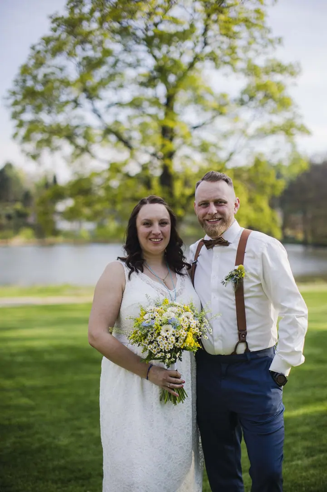
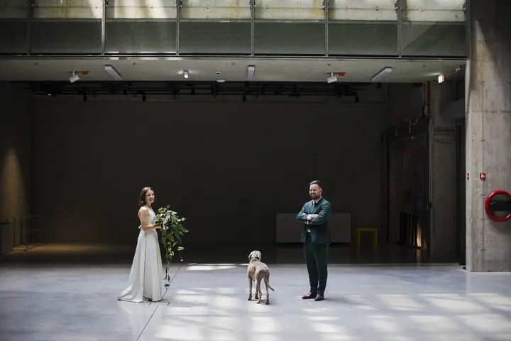

jedna
Svatební fotografie
Fotím celý den od makeupu do západu slunce. Pracuji nenápadně a z vaší svatby skládám autentický příběh plný přirozených momentů.


Jmenuji se Ruda Kovář a fotografii se věnuji přes 15 let. Začínal jsem u portrétů a ve studiu, kde jsem se naučil pracovat se světlem a emocemi. Reportáž mě pak naučila zachytit autentické okamžiky a obojí dnes spojuji při focení svateb.
Více o mně
Co fotím
jedna
Fotím celý den od makeupu do západu slunce. Pracuji nenápadně a z vaší svatby skládám autentický příběh plný přirozených momentů.

Od makeupu do západu slunce.


Za objektivem
Můj příběh fotografa začal před více než 15 lety. Nejdřív jsem se věnoval portrétní a studiové fotografii, kde jsem se naučil pracovat se světlem, kompozicí a emocemi lidí před objektivem. Potom přišla reportáž, která mě naučila zachytit skutečné okamžiky tak, abych do nich nezasahoval.
Na to, jak fotografii vnímám, měly velký vliv i roky v zahraničí. Žil jsem na Novém Zélandu, v USA, v Jižní Koreji a v Portugalsku. Poznal jsem různé kultury a jejich svatební tradice a naučil se přizpůsobit jakékoli situaci i jakémukoli světlu.
Na svatbě pracuji nenápadně a nechávám den plynout po svém. Chci, abyste ve fotkách po letech našli to, co se opravdu dělo: radost, smích, dojetí i malé chvíle, kterých jste si v ten den možná ani nevšimli.
Rudolf
Sejdeme se, poznáme se a projdeme si, jak bude váš den vypadat a co je pro vás důležité.
Fotím od makeupu až do západu slunce. Pokud chcete mít nafocenou i párty, můžeme focení prodloužit o 2 hodiny.
Z celého dne vyberu a upravím 400 až 600 fotek. Ke každé fotce dostanete i černobílou verzi.
Hotové fotky vám do 14 dnů pošlu v online galerii, odkud si je snadno stáhnete a pošlete dál.
Portfolio
Fotografie jsou ilustrační
Otázky
Svatební balíček stojí 25 000 Kč. Zahrnuje celý den od makeupu do západu slunce, osobní schůzku, 400 až 600 upravených fotek, černobílé verze a online galerii.
Ano. Focení můžeme prodloužit o 2 hodiny párty za 3 000 Kč.
Hotové fotky dostanete do 14 dnů v online galerii.
Doprava na místo svatby v Praze je zdarma. Pokud se berete jinde, napište mi a domluvíme se.
Co nejdřív. Nejlepší termíny se rychle plní, proto mi napište, jakmile budete znát datum.

Napište pár vět o tom, co si představujete. · +420 604 896 384